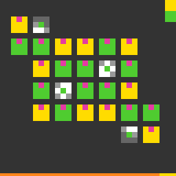

ft09
Click tiles to cycle their colours until every nine-grid matches the pattern drawn in its centre.
6 levels · 7 rules · all levels replayed in Lean
Replay
The certified run that cleared every level, one action at a time. Beside each step: the rules of the model that explain it; they are also marked in the rule list below.

Explained by
Press Play or step to load the run. Keys, while the player is on screen: ← → step, Space play / pause. A click is circled; cells that changed are outlined.
How it plays
On the screen there are several nine-grids: the outer ring consists of tiles that can be clicked (some positions are empty, or are the centre of another nine-grid), and the block in the exact centre draws the question pattern of this grid. In some levels there is a legend at the top right, listing from top to bottom this level's palette. Click a tile and its colour changes along the palette to the next one, wrapping back to the first at the end; in the first level only the nine-grid circled by the square frame can be clicked, and the others are examples. If a tile has a mark on its side, the neighbouring block that the mark points to also changes colour by one step, passed on for this step only. Adjacent nine-grids may share tiles of the outer ring. When every nine-grid is matched to its question pattern, the level is cleared: the positions lit in the pattern are this grid's lit colour, and the other positions are another single colour. The bottom row is a counter bar, used up as the steps in this level go by.

Model
The final model: 6 object types and 7 rules. Each rule is a Python check against every recorded step; 4 of them are translated into Lean (the paper's per-game table). Code under a rule is the file of the same name in the agent's Lean project.
Object types
- Palette
paletteThis level's colours and their order, listed top to bottom in the top-right legend.Lean · World.lean
-- Board.palette : List Nat structure Board where palette : List Nat tiles : List Tile grids : List Grid backdrop : Nat deriving DecidableEq, Repr - Tiles
tilesThe position of each clickable tile and whether each of its sides has a mark.Lean · Tile.lean
-- Board.tiles : List Tile structure Tile where cell : Cell marks : List Dir deriving DecidableEq, Repr - Nine-grids
gridsEach nine-grid's centre, its lit colour, and the small pattern drawn at its centre.Lean · Grid.lean
-- Board.grids : List Grid structure Grid where center : Cell lit : Nat pattern : List Code deriving DecidableEq, Repr - Colours
colorsThe current colour of each tile.Lean · World.lean
-- World.colors : List Nat structure World where board : Board colors : List Nat deriving DecidableEq, Repr - Counter bar
bar_usedThe bottom row of the screen: how many cells this level has used.Python only - Backdrop
backdropThe rest of the screen outside tiles, nine-grid centres and the counter bar.Lean · World.lean
-- Board.backdrop : Nat structure Board where palette : List Nat tiles : List Tile grids : List Grid backdrop : Nat deriving DecidableEq, Repr
Rules
click_advances_tileClicking a tile moves its colour one step along the palette, wrapping at the end.Python
from __future__ import annotations from derive.advance import advance from rule._scope import same_board … … … … HISTORY = [ … … … … … … … ] IDENTITY = ("definition", "Rule/Step/ClickAdvancesTile.lean") def scope_(w, act, nw, ctx) -> str | None: r = same_board(act, ctx) if r: return r if act.kind != "click" or w.index_of(act.cell) is None: … return None def assert_(w, act, nw, ctx) -> bool: i = w.index_of(act.cell) return nw.color_at(act.cell) == advance(w.palette, w.colors[i])Lean · ClickAdvancesTile.lean
import Obj.World import Obj.Act.Act def advance (pal : List Nat) (c : Nat) : Nat := match pal.idxOf? c with | some i => pal.getD ((i + 1) % pal.length) c | none => c def Board.selfMoved (b : Board) : Act → List Nat | .click c => (b.indexOf c).toList | .void => []marks_push_neighboursEach mark on the clicked tile pushes the neighbouring tile it points to one step.Python
from __future__ import annotations from derive.advance import advance from derive.links import moved_by from rule._scope import same_board … … … … HISTORY = [ … … … … … … ] IDENTITY = ("definition", "Rule/Step/MarksPushNeighbours.lean") def scope_(w, act, nw, ctx) -> str | None: r = same_board(act, ctx) if r: return r if act.kind != "click" or w.index_of(act.cell) is None: … if not w.tiles[w.index_of(act.cell)].marks: … if len(moved_by(w, act.cell)) < 2: … return None def assert_(w, act, nw, ctx) -> bool: for j in moved_by(w, act.cell)[1:]: cell = w.tiles[j].cell if nw.color_at(cell) != advance(w.palette, w.colors[j]): return False return TrueLean · MarksPushNeighbours.lean
import Obj.World import Obj.Act.Act def Board.linked (b : Board) : Act → List Nat | .click c => match b.indexOf c with | some i => match b.tiles[i]? with | some t => t.marks.filterMap (fun d => (c.shift d).bind b.indexOf) | none => [] | none => [] | .void => []level_up_iff_all_doneThe level is cleared exactly when every nine-grid matches its question pattern after the click.Python
from __future__ import annotations from derive.effect import colors_after from derive.goal import all_done … … … … HISTORY = [ … … … … … … ] IDENTITY = ("definition", "Rule/Goal/LevelUpIffAllDone.lean") def scope_(w, act, nw, ctx) -> str | None: if act.kind == "reset": … if ctx is None: … return None def assert_(w, act, nw, ctx) -> bool: after = colors_after(w, act) if after is None: return False up = ctx["level_next"] != ctx["level_prev"] return all_done(w, after) == upLean · LevelUpIffAllDone.lean
import Obj.World def World.gridDone (w : World) (g : Grid) : Bool := let cols := g.ring.map (fun p => (p.1.bind w.colorAt, p.2)) let onsOk := cols.all (fun p => p.2 != .on || p.1 == some g.lit) let offs := cols.filter (fun p => p.2 == .off) let offCols := offs.filterMap (fun p => p.1) onsOk && offCols.length == offs.length && offCols.all (fun c => c != g.lit) && offCols.all (fun c => c == offCols.headD 0) def World.isGoal (w : World) : Bool := w.board.grids.all w.gridDonenothing_else_changesEverything else stays unchanged: untouched tiles, tile marks, grid patterns, palette and backdrop.Python
from __future__ import annotations from derive.links import moved_by from rule._scope import same_board … … … HISTORY = [ … … … … … … … … … ] IDENTITY = ("derived", "Derived/NothingElseChanges.lean", … … def scope_(w, act, nw, ctx) -> str | None: return same_board(act, ctx) def assert_(w, act, nw, ctx) -> bool: if (nw.tiles, nw.grids, nw.palette, nw.backdrop) != (w.tiles, w.grids, w.palette, w.backdrop): return False moved = set(moved_by(w, act.cell)) if act.kind == "click" else set() for i, c in enumerate(w.colors): if i not in moved and nw.colors[i] != c: return False return TrueLean · NothingElseChanges.lean
import Obj.World import Step theorem board_fixed (w : World) (a : Act) : (w.step a).board = w.board := rfl theorem nothing_else_changes (w : World) (a : Act) (i : Nat) (h : (w.board.moved a).contains i = false) : (w.step a).colors[i]? = w.colors[i]? := by have h' : i ∉ w.board.moved a := by simpa using h simp only [World.step, step, List.getElem?_mapIdx] cases hc : w.colors[i]? with | none => rfl | some c => simp [h']bar_grows_slowlyWithin a level, each step never decreases the used cells and adds at most two.Python onlyPython
from __future__ import annotations from rule._scope import same_board … HISTORY = [ … … … ] IDENTITY = ("unmodeled", None, … … def scope_(w, act, nw, ctx) -> str | None: return same_board(act, ctx) def assert_(w, act, nw, ctx) -> bool: return 0 <= nw.bar_used - w.bar_used <= 2bar_refills_on_new_boardEntering a next level still to be played refills the counter bar.Python onlyPython
from __future__ import annotations … … HISTORY = [ … … ] IDENTITY = ("unmodeled", None, … … def scope_(w, act, nw, ctx) -> str | None: if act.kind == "reset": … if not ctx or ctx.get("mark") != "new_board": … return None def assert_(w, act, nw, ctx) -> bool: return nw.bar_used == 0reset_returns_to_openingReset returns the world to that level's opening state.Python onlyPython
from __future__ import annotations … … … HISTORY = [ … … ] IDENTITY = ("unmodeled", None, … … def scope_(w, act, nw, ctx) -> str | None: if act.kind != "reset": … if not ctx or ctx.get("opening") is None: … return None def assert_(w, act, nw, ctx) -> bool: return nw == ctx["opening"]
Code is shown with comments and the agent's notes removed; the files as written are in the archive under Check it yourself.
Proof
For every level, Lean starts from the level's first screen, applies the model's rules to the certified actions, and checks that every computed state agrees with the recorded frame on the components the model represents, and that the last one wins. Each theorem is closed by the Lean kernel and is a statement about the learned model.
Every level can be won
theorem scene1_winnable : Winnable (scene1 : World) := …theorem scene3_winnable : Winnable (scene3 : World) := …theorem L0_winnable : Winnable (L0_start : World) := …theorem L1_winnable : Winnable (L1_start : World) := …theorem L2_winnable : Winnable (L2_start : World) := …theorem L3_winnable : Winnable (L3_start : World) := …theorem L4_winnable : Winnable (L4_start : World) := …theorem L5_winnable : Winnable (L5_start : World) := …What cannot be won under the model
theorem key_no_win (g : Grid) : ∀ w a, Act.legal w a = true → Key g w → (w.step a).isGoal = false := …theorem unsolvable_by_key (g : Grid) (w : World) (h : Key g w) : Unsolvable w := …theorem scene0_unsolvable : Unsolvable (scene0 : World) := …theorem unsolvable_by_key2 (g1 g2 : Grid) (cell : Cell) (w : World) (h : Key2 g1 g2 cell w) :
Unsolvable w := …theorem scene2_unsolvable : Unsolvable (scene2 : World) := …Statements only; the proofs and the full Lean project are in the archive, with the steps to re-run them, under Check it yourself.
Check it yourself
Everything on this page comes from files you can download and check. The archive holds the agent's files: the recorded run, the concept book, the concept sources, the Lean project and the sealed model file, plus the record of our kernel check.
Download ft09.zip 0.1 MB · 37 files
Re-run the proof
Before you start: our run of this check took 57 s and 5.5 GB of memory at its peak (2026-10-23).
- Download ft09.zip and unpack it. The model and its theorems are in
archive/ft09-20260907/formal/Game.lean. Before changing it, check that its SHA-256 isce3b3d4eb6c119f9690229159eaf7a0b3790d4d62334ffeb90c9e3df2205dea0 - Install Lean with elan, then the version named in the archive's
lean-toolchain:elan toolchain install leanprover/lean4:v4.34.0 - Copy the model file to
Check.leanand append these two lines to the copy:#print axioms consistent #print axioms faithful - In the folder that holds
Check.lean, run:lean +leanprover/lean4:v4.34.0 -M60000 Check.lean - Lean should finish without errors and print:
The first line is printed by the file itself: for each rule, how many recorded transitions meet its condition.GUARD_HITS bar_is_full_then_used=146,bar_refills_on_levelup=8,bar_used_never_shrinks=136,click_cycles_palette=131,mark_directs_linkage=25,no_levelup_before_ring_matches=136,nothing_else_changes=136,pattern_three_marks_no_tile=146,ring_matched_levels_up=9 'consistent' depends on axioms: [propext] 'faithful' depends on axioms: [propext]
What a pass establishes
consistent: for every recorded transition, as read by the agent's parser and with duplicates removed, every rule whose condition holds also has its effect hold. faithful: the certified run, recomputed step by step from the first screen of each level, matches the record and ends in a win. Axioms used: propext, all among Lean's standard ones.
What it does not establish: that the parser reads the screens correctly (that step runs in Python, outside Lean), or that a rule whose condition never occurs in the record is right. The Python file that produced the readings inside the model file is in the archive at meta/repair-20260928/lib/ft09-20260907/_lib.py.